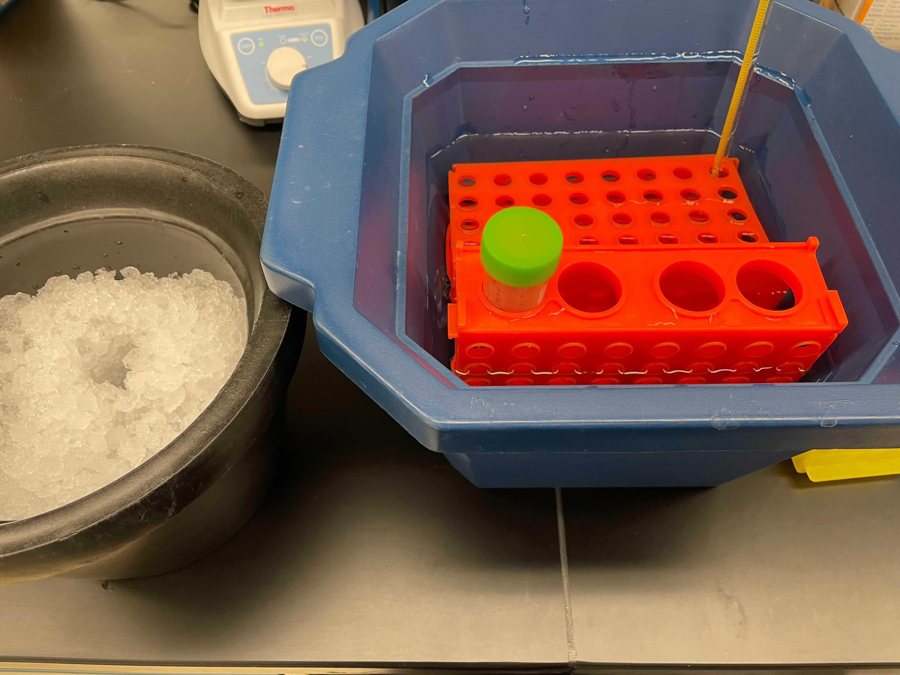
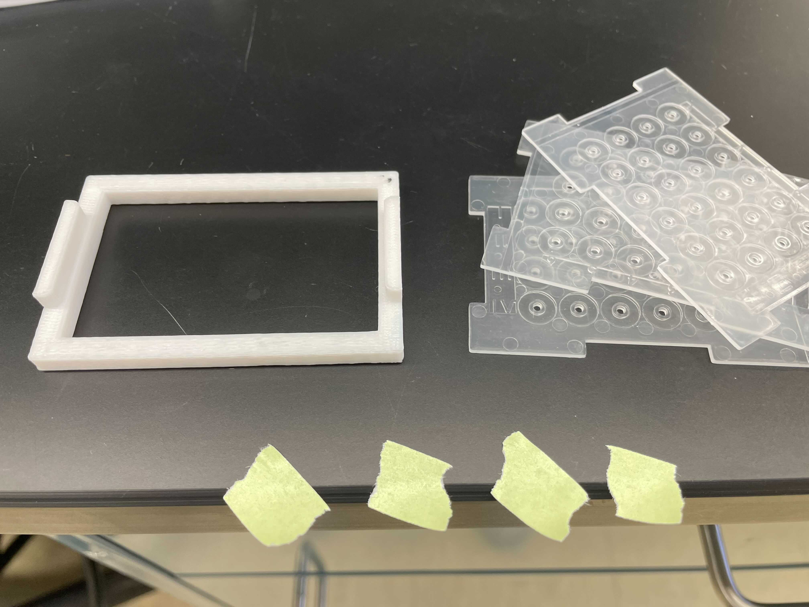
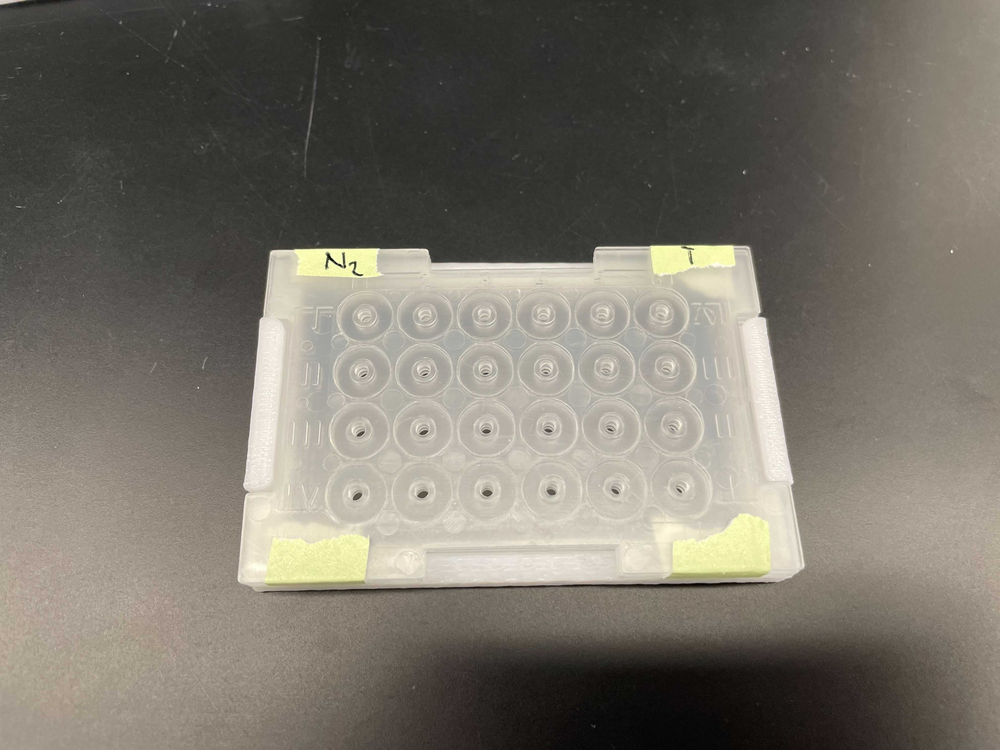
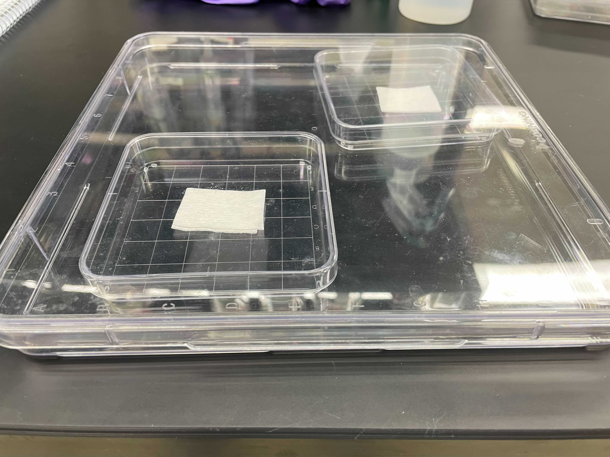
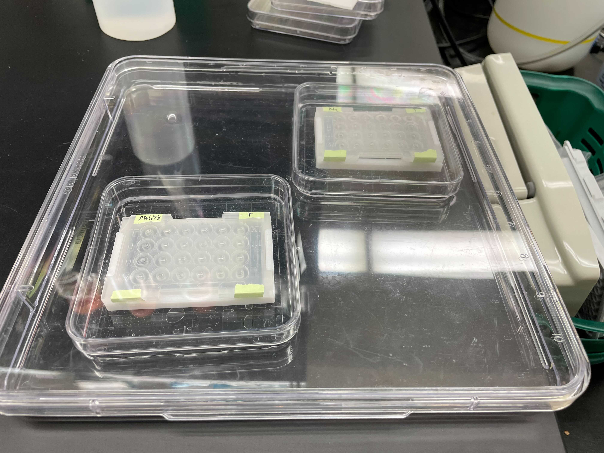

C. elegans Burrowing Choice Assay
Materials
- PF-127 (Sigma P2443)
- M9
- Water
- Square bioassay dish (e.g., Carolina #741470)
- Large square dish
Protocol
Advance preparation of staged C. elegans and the PF-127 gel
-
2-3 days before the experiment, make a 30% w/v PF-127 gel solution in water. Advance preparation allows the PF-127 to hydrate and dissolve completely.
a. Add 10 mL of water to a 50 mL tube.
b. Weigh out 9 grams of PF-127 solid and add to the water.
c. Add 11 mL of distilled water to the tube to make a 30% w/v solution.
d. Place the undissolved gel solution at 4°C to dissolve completely over the next 2-3 days.
NOTE: The gel polymerizes at room temperature, so be careful not to take the gel solution out of the fridge too often, be quick when using the gel solution, and keep the solution on ice while not in the fridge.
-
5 days in advance to doing the experiment, pick 5 L4s to each of 5 seeded plates.
Worm-gel preparation
-
By the time you start the experiment, the gel solution should be completely dissolved and the C. elegans should be mostly adults.
-
Wash worms off of all 5 plates into a single 1.5 mL tube by adding 1 mL of M9 to the first plate, swirling, and transferring to the next plate. Repeat the swirl and transfer for all 5 plates, then pipette the worms into a 1.5 mL tube.
-
Mix the worms by inverting, then allow the worms to settle for 2m 15s.
-
Repeat the M9 wash twice and then once with water.
-
After the final wash, add up to 1 mL of water to make the titer calculations easier.
-
Count the number of worms in five 5 µL aliquots.
-
Calculate the amount of PF-127 to add to make a 1 worm/µL solution.
-
Set up an ice bath at ~12°C and set an aliquot of the gel solution in a conical tube. Allowing the gel to warm >12°C will make it too viscous to work with and having it colder than 12°C will cause greater cold-shock to the worms.

-
In the 1.5 mL tube allow the worms to settle once again and remove all but ~50 µL of water.
-
Cut the tip of a p1000 to increase the bore size, flush the tip with ice-cold water, and use it to add the amount of gel that is needed to reach the desired concentration of worms. Ensure that the final PF-127 concentration is 26-28%.
-
Mix thoroughly by carefully pipetting so as to not induce bubbles and keep the worm-gel solution in the 12°C bath.
Stacks preparation
-
Obtain 3 6x4 plates and a stack stand.

-
Tape the 3 plates tightly together to form a stack and place onto the stack stand. Make sure the plates are flat, do not use plates that have a slight bend.
-
Label the top and bottom side of the stack and which sides or rows will have the attractant and control

-
Use the repeater pipette to add 12 µL of the worm-gel mixture into each cell of the stack. Flush the pipette tip with ice-cold water to limit polymerization in the tip.
-
Allow the gel to polymerize (~5-10 minutes)
-
While the gel is polymerizing, count and record the total number of worms in each well.
-
Once the gel has polymerized (when worms are no longer thrashing in liquid), add 3 µL of the cue to the top of each polymerized well.
-
Add 3 µL of the control to the other side.
-
Keeping the stack hydrated is essential, otherwise the gel and worms will desiccate.
a. Place a wet paper towel in the bottom of a bioassay dish, put the stack into the small container, and place the lid over the top.
b. Four bioassay dishes can fit in the larger square tray. Put the bioassays dishes in the tray, and then add tap water to the tray. Cover the tray with a lid.
 
-
Check each well every 15-30 minutes to ensure worms are burrowing.
-
After 1 hour, count and record the number of worms that have reached the attractant and the number of worms that have reached the control. Worms that have reached the cue/control are moving at the interface of the liquid and gel, often thrashing.
-
Using a razor blade, slice through the separations of each stack to disassemble the stack.
-
Count the number of worms in each cell of every slice.
-
Store data and notes according to the guidelines in Local Pipelines.